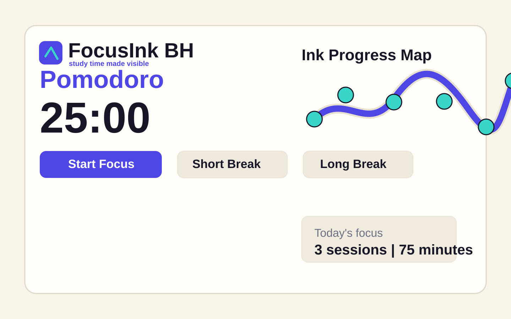

Pomodoro for students
Turn study time into visible progress.
FocusInk BH combines Pomodoro timers with an Ink Progress Map, so every completed focus session leaves proof that you moved forward.

Pomodoro
25:00
Ink Progress Map
0 sessions- 0focus minutes
- 0day streak
- 0tasks logged
Evidence of development
Export a simple focus report for your booth demo.
The report proves that the service is not just a timer. It shows sessions, task notes, and progress evidence.